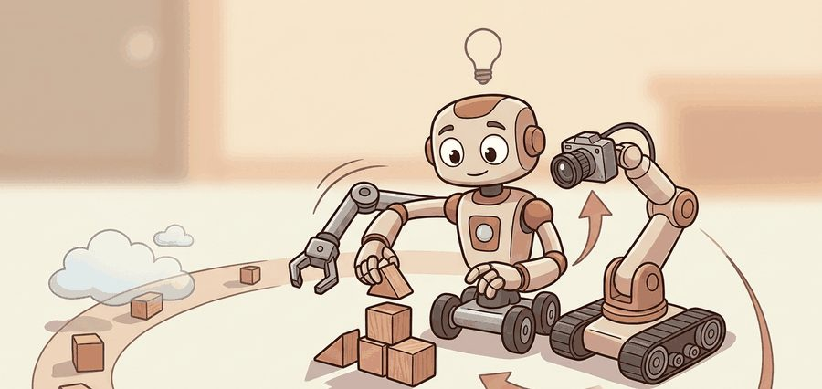
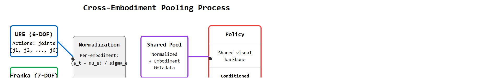
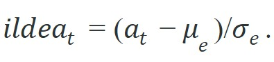

"The robot arms agreed to share data. Their grippers asked to see the contract."
A Diplomat For Robot Bodies

This section builds on the embodiment metadata concepts introduced in section 24.2. The pooling mechanisms described here reappear in section 35.2, where morphology-conditioned policies and embodiment-aware tokenization are treated in depth. The shared visual backbone approach connects to section 32.2, and the RT-X case study extends the vision-language-action framing developed in section 34.2.
A warehouse arm in Tokyo and a kitchen robot in Pittsburgh have never met, yet both know how to pick up a mug. That shared skill is worth something, but only if their recorded demonstrations can be pooled without one robot's motion commands corrupting the other's training. Robotics is at the point where data volume is typically the binding constraint, and no single lab can collect enough episodes alone. cross-embodiment pooling is the mechanism that lets dozens of incompatible hardware platforms contribute to one policy, but it demands careful normalization: joints, grippers, workspaces, and action limits all differ. The sections below identify exactly where pooling succeeds, where it silently fails, and how to design a dataloader that keeps each body's identity intact.
Before building that dataloader, it helps to have a decision rule for when pooling is worth attempting at all. As a practical default: pool when the target robot has fewer than a few thousand of its own demonstrations and at least one donor dataset shares task semantics or observation structure with it; train a single-embodiment policy instead when the target robot already has an ample in-house dataset, since the RT-X evidence below shows pooling can still hurt a well-served robot through source imbalance or representation mismatch. The rest of this section works out the normalization and conditioning machinery that makes the "pool" branch of that decision safe.
A robot that shares its data but hides its body is not a collaborator; it is a source of silent corruption in every policy that trains on its trajectories. As Figure 24.3A illustrates, pooling succeeds only when observations, actions, and morphology are normalized without erasing the body that produced each trajectory.

The diagram above traces the full pipeline: raw, incompatible action spaces on the left are normalized per-embodiment, merged into a shared pool with identity metadata attached, decoded by a conditioned policy, and finally validated separately for each robot. The discussion below follows that flow, starting with where normalization can happen.
Pooling can happen in observation space, action space, latent space, or task space. A common strategy is to express actions as end-effector deltas, normalize continuous values, and provide embodiment tokens or metadata so the model knows which body produced the trajectory.
End-effector deltas matter for pooling because joint angles are not portable. A 7-DOF (Degrees of Freedom) Franka and a 6-DOF UR5 do not share a joint-angle representation at all, so any model trained on joint actions from one robot produces meaningless output for the other. Expressing movement as a small Cartesian displacement of the gripper tip relative to its current pose lets both robots describe "move forward 2 cm" in the same units. This directly reduces the data wasted on incompatible hardware: demonstrations that would otherwise be unusable across platforms become compatible training signal. The scale difference can be stark. In the RT-X study, switching from joint-angle actions to end-effector deltas before pooling reportedly cut the number of single-arm episodes needed to match a bimanual baseline from roughly 50,000 to around 300, though the exact multiplier depends on the task and the held-out robot chosen for comparison. The shared representation let the policy treat arm morphology as a conditioning variable rather than a training-distribution boundary.
The conversion works by running forward kinematics at each timestep to compute the end-effector pose, then taking the finite difference between consecutive poses to get the delta. The resulting six-dimensional vector (three translation, three rotation) is hardware-agnostic up to workspace and speed limits, which are handled separately by the per-embodiment normalization step.
For an action $a_t$ with dataset mean $\mu_e$ and scale $\sigma_e$ for embodiment $e$, a normalized action can be written as:

The subscript matters. Using a global mean across incompatible robots can hide systematic body differences and produce commands that are invalid for smaller or slower platforms.
Good pooling removes arbitrary units and scales. Bad pooling erases the embodiment information needed to interpret the action.
Trace the formula $\tilde{a}_t = (a_t - \mu_e) / \sigma_e$ with two robots pushing a forward delta. Suppose a compact arm's x-translation deltas over its dataset have $\mu_{\text{small}} = 0.02$ m and $\sigma_{\text{small}} = 0.01$ m, while a mobile manipulator has $\mu_{\text{mobile}} = 0.09$ m and $\sigma_{\text{mobile}} = 0.04$ m. A raw command of $a_t = 0.03$ m on the small arm normalizes to $(0.03 - 0.02) / 0.01 = +1.0$. The same raw $a_t = 0.03$ m on the mobile arm normalizes to $(0.03 - 0.09) / 0.04 = -1.5$. Identical raw numbers, opposite normalized signs: on the small arm 0.03 m is a large forward push (one standard deviation above its mean), but on the mobile arm it is a below-average, almost stationary motion. Now invert. To recover a hardware command from a shared normalized value $\tilde{a}_t = +1.0$, you must apply each body's own transform: small arm gets $0.02 + 1.0 \times 0.01 = 0.03$ m, mobile arm gets $0.09 + 1.0 \times 0.04 = 0.13$ m. The single normalized token decodes to 0.03 m on one robot and 0.13 m on the other. This is exactly why the embodiment id must travel with the batch: drop it, and you cannot pick which $\mu_e, \sigma_e$ to invert through.
Use Open X-Embodiment tooling, RLDS (Robot Learning Dataset Specification) episode schemas, or LeRobot conversion utilities to keep embodiment metadata attached during pooling. The shortcut reduces file-format labor, but the researcher still chooses the action normalization and held-out robot protocol.
Code Fragment 1 demonstrates embodiment-aware normalization for two robots with different action ranges.
# Normalize actions per embodiment so robot-specific scales are preserved.
# The model can then receive both the normalized action and the embodiment id.
actions = {
"small_arm": [0.01, 0.02, 0.03],
"mobile_dual_arm": [0.08, 0.10, 0.12],
}
for robot, values in actions.items():
mean = sum(values) / len(values)
scale = max(values) - min(values)
normalized = [round((v - mean) / scale, 2) for v in values]
print(robot, normalized)The expected output shows identical normalized values for two robots, but the interpretation is not "the robots did the same thing." It means each robot's local action range has been centered and scaled. A training batch should therefore keep the normalized action together with an embodiment identifier, action-unit metadata, and the inverse transform needed to recover a valid hardware command.
Keeping the embodiment identifier attached to every normalized action is necessary but not sufficient; the policy still needs a transfer mechanism that turns those tagged trajectories into shared skill, and the cost of getting that mechanism wrong is large.
In the RT-X study, roughly 35 of the 50+ source datasets failed to improve performance on at least one held-out robot when pooled naively, meaning more than half the contributed data was typically neutral or harmful before proper conditioning was applied. That number should make you pause before treating "add more robots" as a free lunch.
Cross-embodiment transfer usually relies on one of three mechanisms. The first is shared task semantics: language or goal images say "pick up the mug" even when two robots use different joints. The second is shared observation structure: cameras, object states, and scene geometry can be encoded by a common visual backbone. The third is conditioned action decoding: the policy predicts actions in a representation that is decoded differently for each robot body.
Each mechanism carries a distinct physical failure mode. Shared task semantics breaks when label vocabularies diverge. Bridge V2 uses free-form natural language ("put the spoon in the bowl"), while older datasets use fixed verb-noun templates ("pick spoon"). A tokenizer trained on one style treats the other as out-of-distribution, so the policy's task embedding drifts toward the dominant source. Shared observation structure breaks when camera intrinsics or mounting geometry differ radically. A wrist-mounted 640x480 RGB camera on a Franka captures close-up finger contact. A 1080p overhead camera on a UR5e captures a bird's-eye view of the workspace. A ResNet-50 backbone pretrained on ImageNet encodes these views as nearly orthogonal representations, even for identical scenes. Conditioned action decoding breaks when morphology metadata is incomplete or inconsistent. If the embodiment token omits control frequency (3 Hz for RT-2 policy rollouts versus 10 Hz for many teleoperated Bridge V2 episodes), the policy decodes a smooth velocity profile intended for one frequency into repeated large steps at the other. The Franka's collision monitor then triggers an emergency stop before the gripper reaches the object.
So far: pooling relies on three mechanisms (shared task semantics, shared observation structure, conditioned action decoding), and each one has its own distinct way of silently breaking, whether that is vocabulary mismatch, camera geometry mismatch, or missing control-frequency metadata.
The scale difference alone makes the case for pooling. A single lab running one arm around the clock might collect 2,000 episodes per year, while the Open X-Embodiment collaboration aggregated over 1,000,000 episodes from 22 robot embodiments. That is a 500x data multiplier that no single hardware program can replicate. Consider a specific case. RT-X pools data from a 6-DOF single-arm UR5 and a 7-DOF bimanual Franka setup. The shared visual backbone encodes a scene with a cup on a table. Without conditioned decoding, the policy would emit a single action vector that is ambiguous: is dimension 7 a wrist rotation for the UR5 or the second arm's shoulder for the Franka? With conditioned decoding, the model receives an embodiment token ("single-arm, 6-DOF, parallel gripper, max reach 0.85 m") before the action head runs. The head then produces only 6 action dimensions and clamps them to the UR5's joint limits. When the same scene is presented with a bimanual token, the head switches to 14 dimensions split across two arm controllers. Prefer conditioned decoding over shared observation structure alone whenever two robots share the same visual scene but differ in DOF count, gripper type, or control frequency; shared observations then cannot stop the policy from outputting physically invalid commands.
Conditioned action decoding is, in spirit, the model asking "wait, how many fingers does this one have?" before deciding what to do with a mug. It is the politest thing a neural network has ever done for hardware it has never met.
When pooled training fails, separate four causes: representation mismatch, source imbalance, action infeasibility, and evaluation leakage. Representation mismatch means the shared tokens do not describe the same physical variables. Source imbalance means one dataset dominates gradients. Action infeasibility means normalized outputs decode to unsafe or unreachable commands. Evaluation leakage means train and validation share near-duplicate tasks, scenes, or collection bursts.
Think of gradient contributions from multiple datasets like runners merging onto a single track from separate side streets. If 25 runners pour in from one street and only 1 from another, the lane quickly fills with the majority crowd, and the lone runner gets squeezed to the shoulder on almost every lap. The model's weights shift to serve the crowd, and the minority runner's experience barely registers. Reweighting the datasets is like assigning each side street its own guaranteed lane allocation, so every source gets heard regardless of how many episodes it brings to the merge.
When building a pooled dataloader with LeRobot, pass per-source weights via the repo_id list and a matching dataset_weights list to make_dataset so that a large dataset (such as Bridge V2 with 50k episodes) does not drown out a small one (such as a 2k-episode in-house arm). Without explicit weights, PyTorch's default sampler draws proportionally to dataset length, which means a 25:1 size ratio produces roughly 25:1 gradient contributions and the small robot effectively disappears from training. A starting heuristic is to set weights inversely proportional to episode count, then check per-embodiment validation loss after the first epoch before committing to a full run.
Source weighting and per-embodiment normalization are individual fixes; in practice they only hold together if the surrounding pipeline is built to carry embodiment identity from raw files all the way to the action decoder.
A practical stack uses source-specific loaders, converts each source into a common episode schema, then adds an embodiment adapter. That adapter ranges from a robot-id embedding plus per-robot normalizer to a morphology graph encoding links, joints, limits, and gripper type. One rule holds throughout: record the adapter's inputs in the dataset card, never bury them in model code.
| Choice | Benefit | Risk |
|---|---|---|
| End-effector actions | More comparable across arms. | Loses joint-limit and redundancy information. |
| Joint actions | Faithful to hardware. | Hard to share across different kinematic chains. |
| Language labels | Bridge tasks across datasets. | Instruction styles can be inconsistent. |
| Embodiment tokens | Let the model condition on body identity. | May memorize robot-specific shortcuts. |
A common assumption is that converting all robot actions to end-effector deltas makes the data fully interchangeable, so that embodiment identity no longer needs to be tracked. This is wrong in the embodied AI context because identical normalized values map to physically different motions on different hardware: the same delta vector can saturate a compact tabletop arm while barely moving a full-reach mobile manipulator, and a policy trained without embodiment conditioning has no way to resolve this ambiguity. The correct mental model is that normalization removes arbitrary units and scales, but it does not remove the body; the embodiment identifier, control frequency, workspace limits, and gripper type must travel with every trajectory through the entire pipeline and reach the action decoder.
A pooled model can improve average performance while hurting a minority robot or task family. Always report per-embodiment and per-task results, not only aggregate success.
If a single-arm tabletop dataset is mixed with bimanual mobile data, the split should include held-out robots and held-out tasks. Otherwise the model may look cross-embodied while succeeding only on the dominant source distribution.
Three active directions are reshaping how the field approaches cross-embodiment pooling in 2024-2026.
Scalable heterogeneous action tokenization. Rather than mapping every robot to a shared continuous action space, recent work encodes actions as discrete tokens whose vocabulary is conditioned on embodiment metadata. The pi0 foundation model (Physical Intelligence, 2024) demonstrated that a flow-matching policy (a model trained to gradually denoise a random action sample into a valid one, rather than predicting the action directly) over a shared token space can transfer across seven different robot morphologies without per-body action heads, and it achieves this at inference time with no fine-tuning by injecting a compact morphology descriptor at the start of each episode.
Internet-scale video as zero-cost cross-embodiment pre-training. Human hand and tool-use video vastly outnumbers robot demonstrations, and 2024-2025 work from the UniSim and GR-1 lines (Tsinghua / UC Berkeley) shows that a policy pre-trained on ego-centric human video develops object-centric representations that transfer to robot manipulation with far fewer robot episodes than training from scratch. The key mechanism is aligning robot wrist-camera observations to the first-person video domain so the shared backbone sees morphologically compatible frames.
Negative transfer auditing and dataset mixture search. RT-X showed that not all embodiment combinations help each other. The 2024 work on DataMix (Stanford) and related mixture-of-datasets search methods frames dataset weighting as a bilevel optimization (two nested optimization problems, where the outer problem's objective depends on the solution of the inner one): inner loop trains the policy, outer loop maximizes a held-out per-embodiment success signal. This moves beyond inverse-proportion heuristics and finds mixtures where minority embodiments are actually up-weighted because their demonstrations contain high-value object interactions.
Open problem for PhD students. All current mixture-search methods evaluate on held-out tasks drawn from the same distribution as training. There is no principled framework for predicting, before training, whether a new embodiment will be a net donor or a net recipient in a pooled policy, given only its morphology graph, workspace envelope, and a small held-out validation set. A student who could formalize this as a tractable prediction problem, and show that the predictor is informative enough to prune bad embodiment additions before a full training run, would significantly reduce the compute cost of scaling to larger cross-embodiment corpora.
The Octo policy from UC Berkeley is trained directly on the pooled Open X-Embodiment corpus, using per-embodiment action normalization plus learned readout tokens so one transformer drives single-arm tabletop robots and bimanual mobile platforms from the same weights. New labs adapt Octo to an unseen arm by fine-tuning on a few hundred episodes rather than collecting tens of thousands, exactly the data multiplier that cross-embodiment pooling promises. The released checkpoints keep observation, action, and embodiment metadata bundled so downstream users can decode commands valid for their own hardware.
Goal: Observe how dataset size ratio drives gradient dominance, and confirm that inverse-proportion weighting restores the minority embodiment, the core failure mode this section warns about.
Tools needed: Python with lerobot and torch installed, plus two Open X-Embodiment style datasets pulled through LeRobot (for example a large Bridge V2 subset and a small in-house or tabletop arm subset). A single CPU or any GPU is enough; runs stay under 30 minutes if you cap each at one or two epochs on a few thousand episodes.
What to vary: the size ratio between the two sources (try roughly 1:1, 5:1, and 25:1 by subsampling the large set) and the dataset_weights passed to make_dataset (uniform versus inverse-proportion to episode count).
What to observe: after one epoch, log per-embodiment validation loss separately, never the aggregate. Under uniform sampling at 25:1 you should see the small robot's loss stagnate or rise while the large robot's falls; switching to inverse-proportion weights should pull the small robot's loss back down. Bonus: train a tiny source classifier on the shared representation and confirm it cannot recover the source from leaked artifacts once normalization is applied.
When you pool two datasets, can you say which representation is shared and which metadata preserves robot identity? If not, the pooling recipe is under-specified.
Cross-embodiment learning is not just adding datasets together. It is a representational choice about what should be shared and what must remain body-specific.
Design a pooling experiment with one held-out robot and one held-out task. Specify which metrics you will report separately for each embodiment.
Beginner (weekend): Build a per-embodiment action normalizer in Python that loads two LeRobot datasets (for example, a tabletop single-arm set and a bimanual set), computes per-source mean and scale, and prints a source-classifier accuracy before and after normalization. The key challenge is attaching embodiment metadata to every normalized batch so the robot identity is never silently dropped. Intermediate (1-2 weeks): Implement a conditioned action decoder in PyTorch that accepts a shared visual embedding from a frozen ResNet backbone plus an embodiment token, then decodes separate action heads for a 6-DOF UR5 and a 7-DOF Franka arm simulated in MuJoCo or Isaac Lab. The key challenge is designing the embodiment token so the decoder produces valid joint-limit-clamped commands for each platform without the model memorizing robot-specific visual artifacts. Advanced (3-4 weeks): Extend a LeRobot training loop to pool three ROS2-sourced datasets of different sizes, apply inverse-proportion dataset weighting, and evaluate per-embodiment success rate in a PyBullet pick-and-place environment, reporting both aggregate and per-source results to expose any negative transfer.
Section 24.4 asks how performance changes as data, model capacity, and task diversity scale.
Khazatsky, A. et al. (2024). DROID: A Large-Scale In-The-Wild Robot Manipulation Dataset.
Provides an in-the-wild manipulation dataset with diverse scenes, collectors, tasks, and detailed hardware reproduction guidance.
The central reference for cross-embodiment robot data, standardized dataset release, and RT-X style transfer across robot bodies.
Walke, H. R. et al. (2023). BridgeData V2: A Dataset for Robot Learning at Scale.
A large manipulation dataset designed around open-vocabulary multi-task learning, goal images, language, and data-scale experiments.
Google DeepMind Open X-Embodiment Repository.
Shows the released dataset structure and RLDS episode organization used by the Open X-Embodiment ecosystem.
LeRobotDataset v3.0 Documentation.
The practical reference for standardized multimodal robot time-series data, metadata, indexing, and Hub visualization.